This is a running documentation of some different Houdini tools I have worked on.

For Call of Duty:WWII I implemented a dynamic system for draping paracords in an environment, using Houdini.
 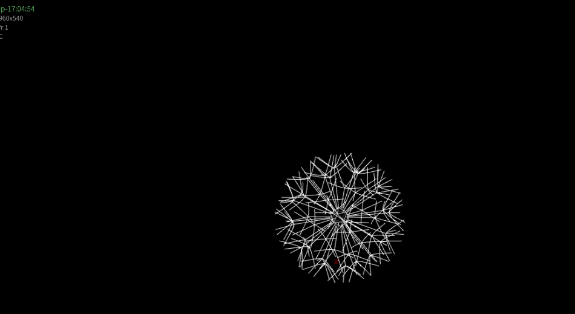
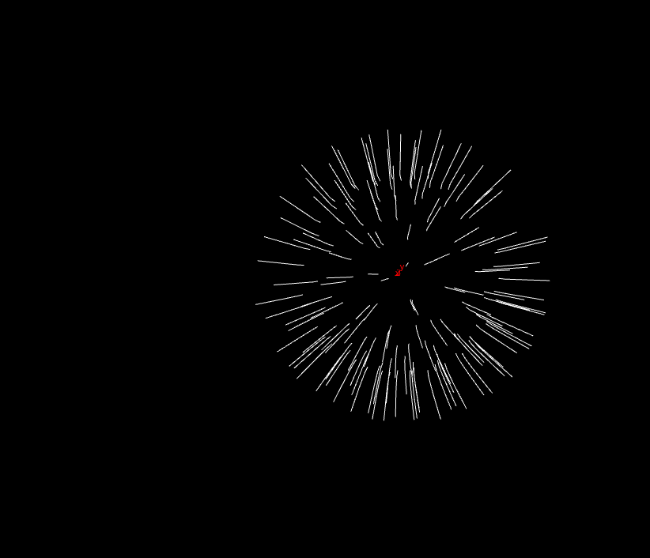
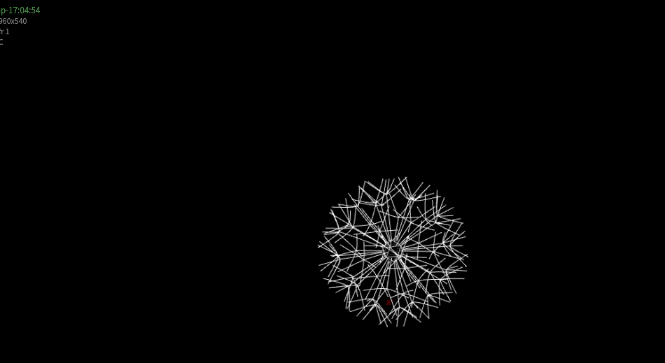
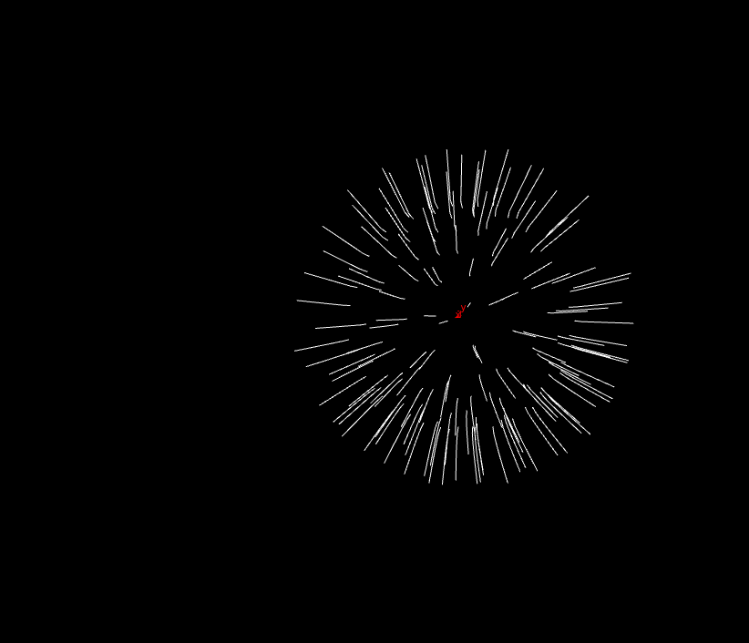
This was a quick study in trying to simulate a dandilion behavior
The rest of these are a random assorment of smaller projects, tests and tutorials. Not all were used in production but for me experimenting like this has been one of the best ways to learn Houdini

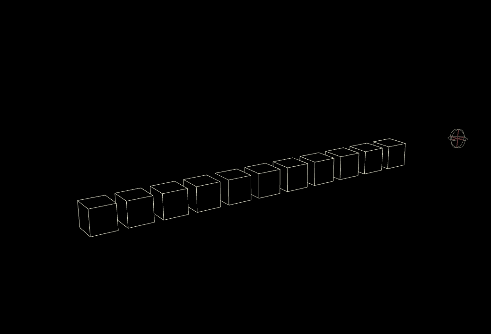
 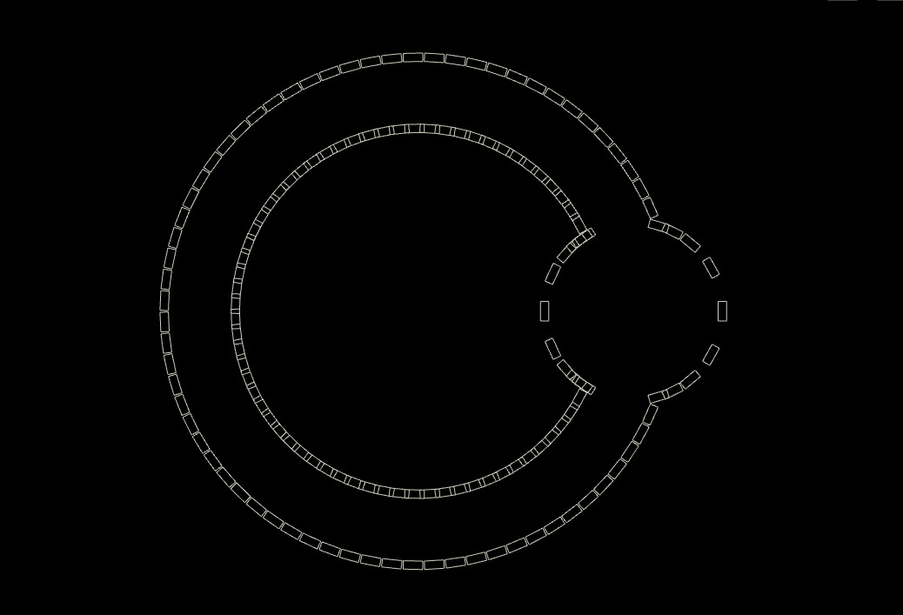
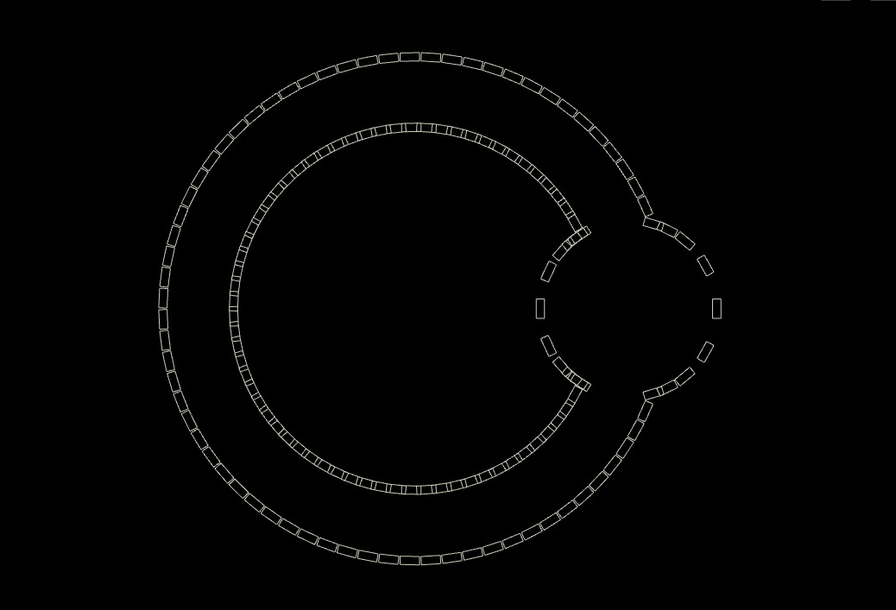
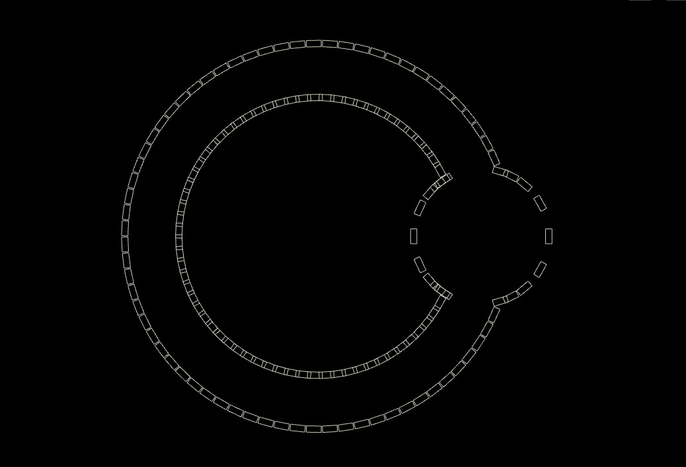
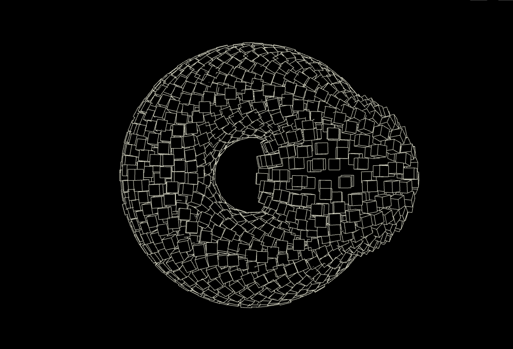

Displacing points from another point in 3d space
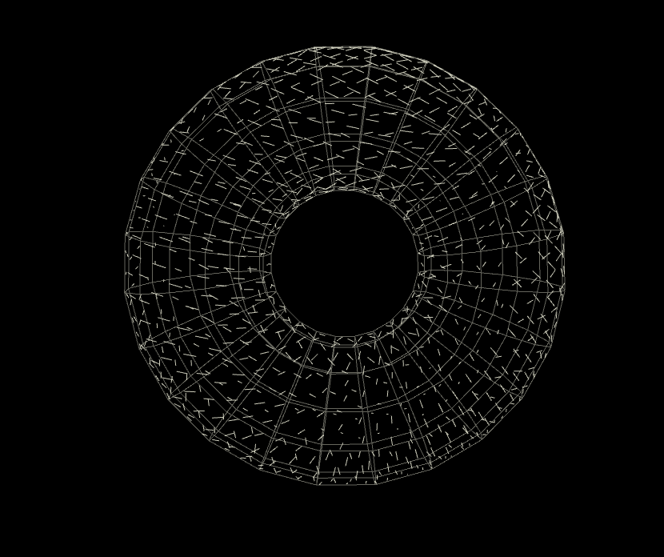
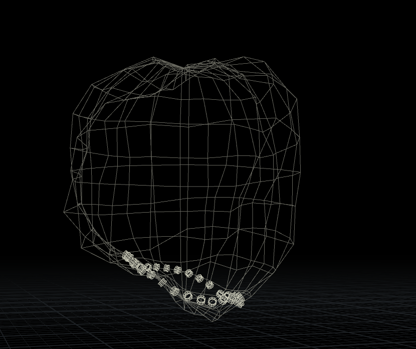

Growing lines along a surface
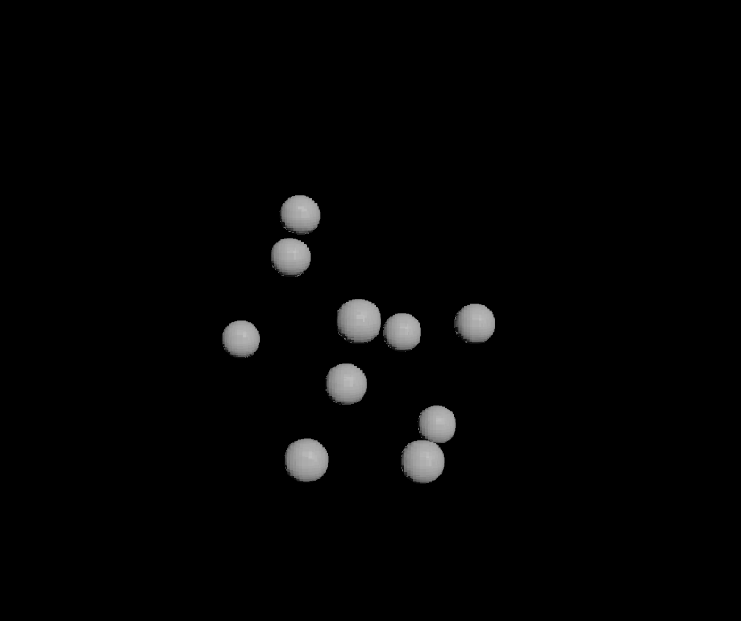
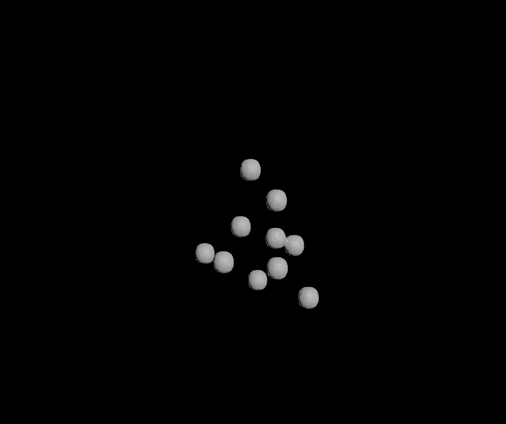

Volume advection
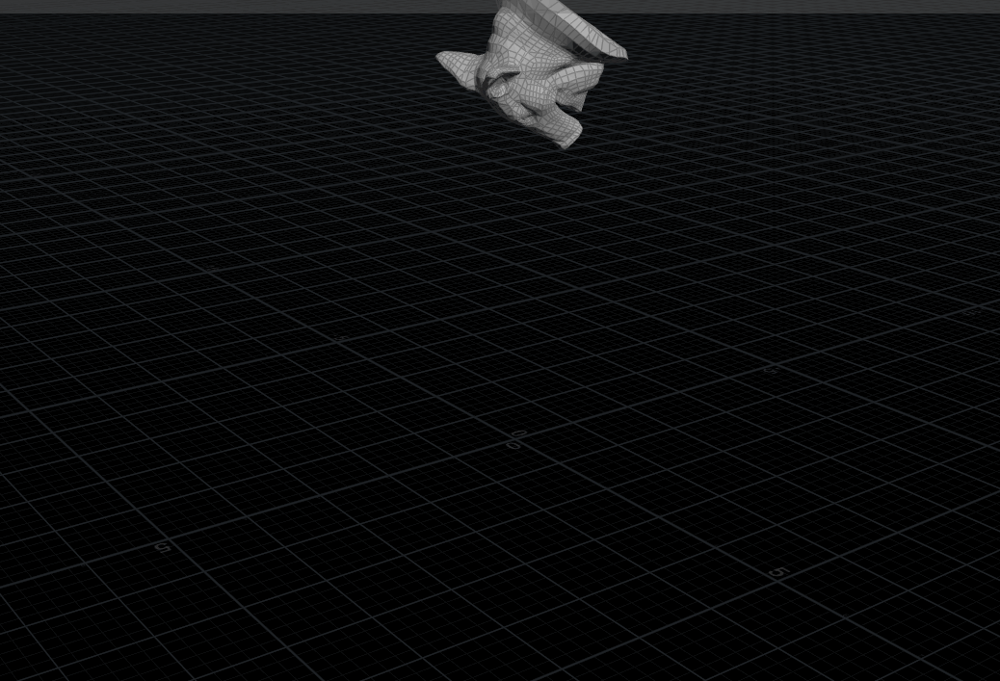


Applied Houdini tutorials
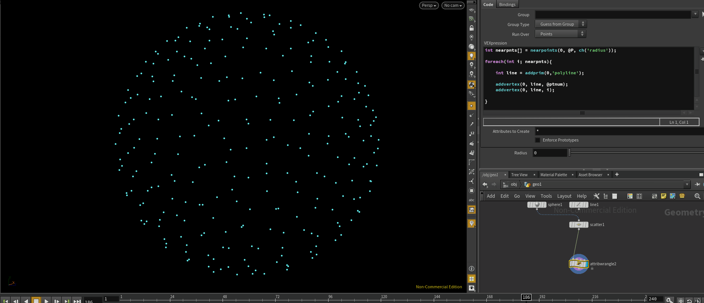
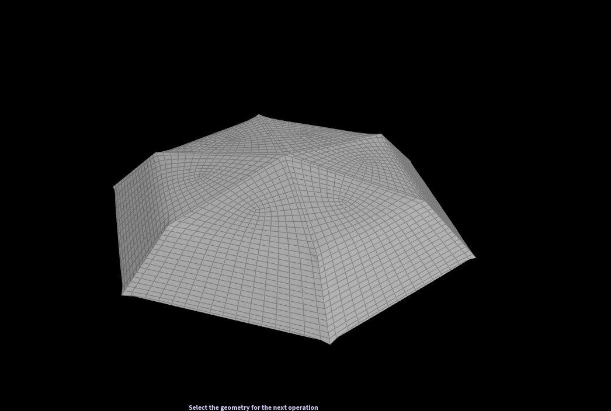

Experiments with cloth